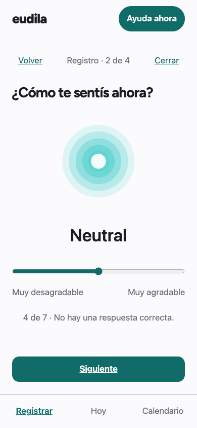
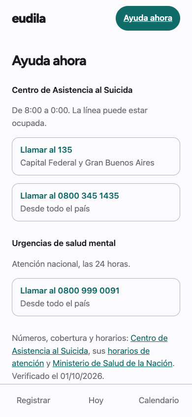

Documento de trabajo · 03/10/2026 · URL de landing y contacto definitivo pendientes
eudila
Un espejo tranquilo para cada estado de ánimo.
Una app abierta para registrar cómo te sentís y acercarte a recursos de ayuda. Para gobiernos y equipos de salud que quieran estudiar y adaptar una herramienta a su contexto.


Qué podés probar hoy
Elegir el momento, usar la escala de ánimo, volver sin perder el borrador y abrir Ayuda. El selector está implementado para conectar el catálogo aprobado; todavía falta ese catálogo y el guardado del historial.
Una conversación para construir juntos
El servicio institucional está en definición. Queremos conocer las necesidades de provincias, municipios y equipos de salud. La maqueta del dashboard comercial está disponible con datos simulados; no es un observatorio operativo.
Explorá el código · AGPL-3.0
github.com/Eudila/eudila
Contacto provisional: issues públicos del proyecto.
No envíes datos personales o de salud; no es atención clínica.